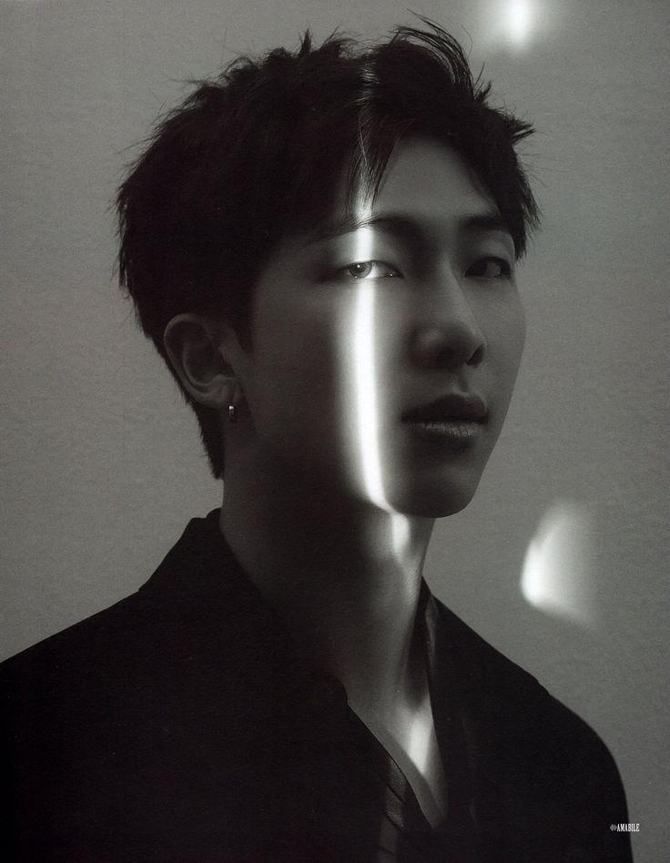
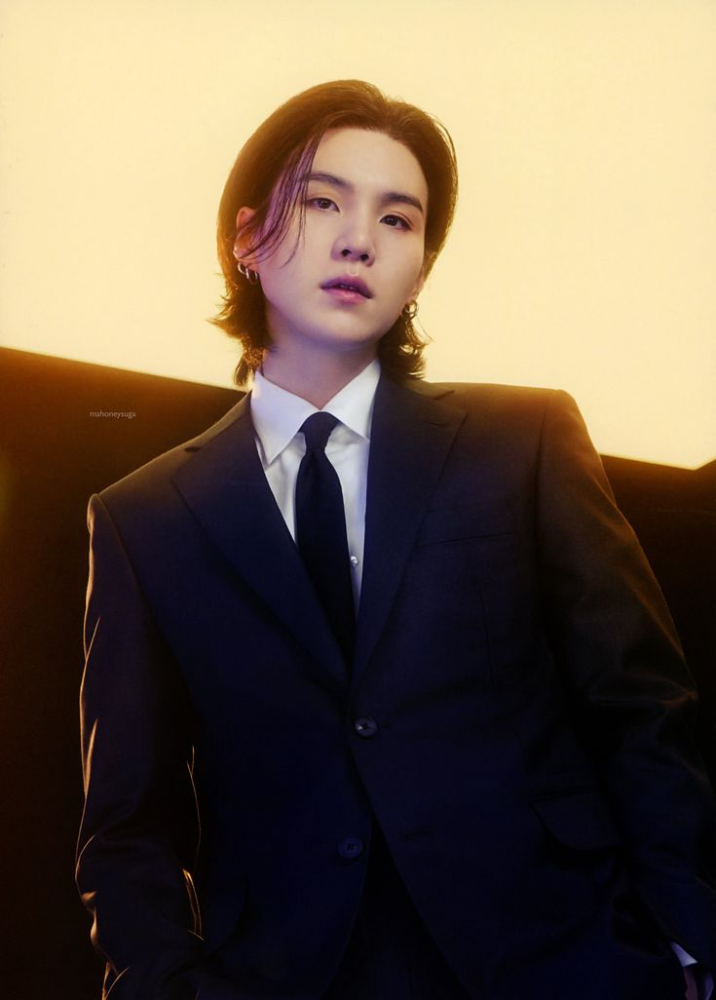

Miembros de BTS
- 
RM

Jin
- 
Suga
J-Hope
Jimin
V
Jungkook
Bienvenidos a la página de BTS
"Descubre más sobre el grupo surcoreano de K-pop."
BTS es, sin duda, el grupo de mayor éxito de la historia del K-Pop, el género musical que desde Corea del Sur ha conquistado las listas de ventas de todo el mundo.
Su origen está en las audiciones que la discográfica Big Hit Entertainment realizó para formar una boy band en 2010. Los primeros elegidos fueron RM y Suga, que desde ese momento se convirtieron en los puntales de la banda. El resto de la alineación sufrió varios cambios durante su andadura inicial, hasta estabilizarse definitivamente en 2012, con Jin, Suga, J-Hope, RM, Jimin, V y Jungkook.
RM
Jin
Suga
J-Hope
Jimin
V
Jungkook
Algunos de los álbumes más conocidos de BTS son: